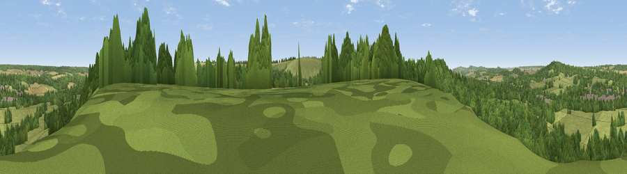

Viewpoint near Compton Chamberlayne
#32315 in England · top 57% of its area beats it · near Compton ChamberlayneThe view, rendered

A 360° render of this exact spot computed from the terrain model, tree cover and land cover — summer colours, afternoon light, calibrated against photographs of famous viewpoints. Real trees, hedges and buildings will differ in detail.
The panorama
Grey silhouette: terrain skyline in each direction (720 bearings, Earth curvature and refraction included). Dashed green: skyline with trees (+15 m) and buildings (+8 m) as obstacles. Blue strip: how far the ground is visible on each bearing.
Where the view opens
Wedge length = distance to the farthest visible ground on that bearing (vegetation-aware). Rings at 10, 25 and 50 km.
What fills the view
54% woodland · 35% grassland · 9% cropland · 1% built-up
Angular shares of the visible panorama (visual magnitude), not map area. Landscape diversity 0.42 (0–1 Shannon).
Key numbers
More beautiful places nearby
The staircase of upgrades: each row has a higher view potential than everything closer. Driving times are estimates from straight-line distance, calibrated against real road routing — check an actual route before setting out.
| Place | Direction | Drive | Score |
|---|---|---|---|
| Viewpoint near Fovant | WSW · 1 km | ~4 min | 45.5 |
| Chiselbury Hill | S · 2 km | ~5 min | 59.2 |
| Hydon Hill | ESE · 3 km | ~7 min | 61.2 |
| Marleycombe Hill | S · 8 km | ~16 min | 63.3 |
| Trow Down | SSW · 9 km | ~18 min | 67.5 |
| Monk's Down | SW · 12 km | ~23 min | 74.4 |
| Viewpoint near Berwick St John | SW · 13 km | ~24 min | 78.2 |
| Viewpoint near Harman's Cross | S · 48 km | ~69 min | 80.8 |
51.06955, -1.97747 · source: screening · position refined by local search. Computed location — check access rights before visiting.